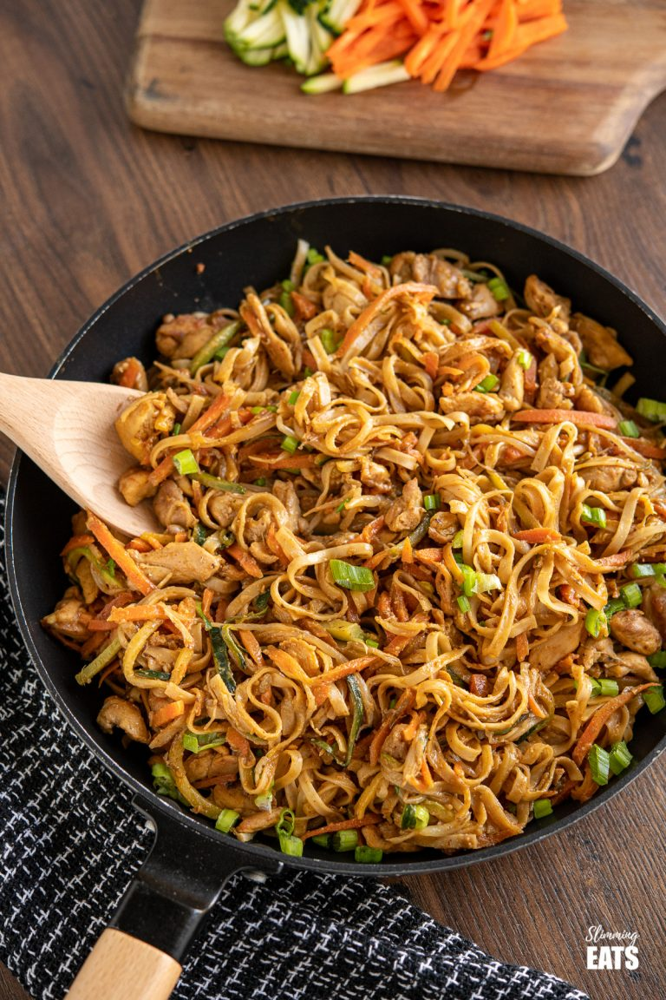

Peanut Chicken Noodles

Description
Easy Peanut Chicken Noodles - a delicious simple noodle stir fry with chicken, vegetables and a peanut sauce.
Ingredients
- 400g of chicken thighs, sliced into thin pieces
- 2 garlic cloves, minced
- ½ tbs of ginger root, grated
- 1 tsp of sesame oil
- 200g of carrot, julienned
- 200g of courgette (zucchini), julienned
- 200g of bean sprouts
- 200g of egg noodles
- 2 spring onions, sliced
For the Sauce
2 tablespoons of natural peanut butter (smooth or crunchy)
2 tablespoons of maple syrup
2 tablespoons of soy sauce
1 tablespoon of dark soy sauce
pinch of red chilli flakes (can add more depending on your preferred heat level)
60ml of water
Steps
- Cook the noodles according to the package directions.
- Add the sesame oil to a large frying pan over medium-high heat.
- Once hot, add the chicken, ginger and garlic and fry until chicken is browned.
- Add in the zucchini, carrots and beansprouts and continue to stir fry for a couple of minutes. Then remove and set aside.
- Add the sauce ingredients to a bowl and whisk thoroughly to combine.
- Add the sauce into the frying pan and bubble on a high heat until it thickens. Running a wooden spoon into the centre of the sauce it should stay apart, this indicates is ready.
- Add back into the pan, the to chicken, vegetables and cooked noodles and toss to coat.
- Sprinkle with chopped spring onions
- Serve and enjoy!!